最快速的「化學掃描儀」
傅立葉轉換紅外光譜（Fourier-Transform Infrared Spectroscopy, FTIR）依分子鍵振動吸收特定波長的紅外光， 幾秒內就能在一個樣本上同時量得數百個波數的吸收值——形成獨一無二的化學指紋。 MIR-DRIFT 模式（漫反射紅外轉換光譜）特別適合粉末食品（咖啡、麵粉、奶粉），無需破壞樣品。
快速無損
幾秒出一條光譜，粉末樣品直接量，不需化學前處理。指紋區
810–1911 cm⁻¹ 中紅外「指紋區」——分子骨架振動，任何化學差異都有痕跡。但是…
一條光譜是 286 個高度相關的數字，必須靠化學計量學才能解讀。咖啡粉 ──▶ FTIR-DRIFT 掃描 ──▶ 286 個波數的吸收值 ──▶ 整理成「樣本 × 波數」資料矩陣
即溶咖啡 MIR-DRIFT FTIR（公開資料）
Mendeley Data frrv2yd9rg（Briandet et al.）：56 支即溶凍乾咖啡， 以 MIR-DRIFT FTIR 量得 286 個波數（810–1911 cm⁻¹ 指紋區）的吸收值， 並標註品種 Arabica / Robusta。屬公開資料。
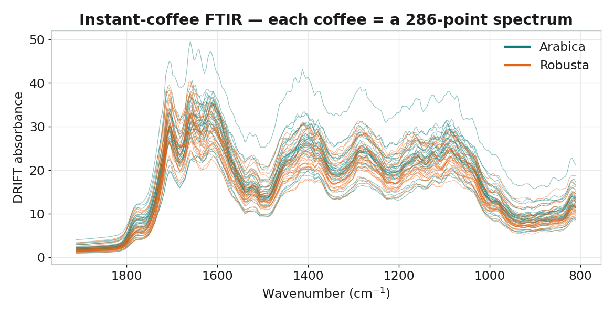
| 品種 variety | 樣本數 | 本課用途 |
|---|---|---|
| Arabica | 29 | PLS-DA 類別 A |
| Robusta | 27 | PLS-DA 類別 B |
前處理：SNV（標準正常變量）
DRIFT 模式的光譜受顆粒大小和填充密度影響，造成基線漂移和乘法散射效應。 SNV（Standard Normal Variate） 對每條光譜逐條計算均值和標準差後標準化， 消除散射干擾，讓化學資訊凸顯出來——這是 MIR-DRIFT 分析的標準前處理， 作用等同近紅外光譜中廣泛採用的 SNV。
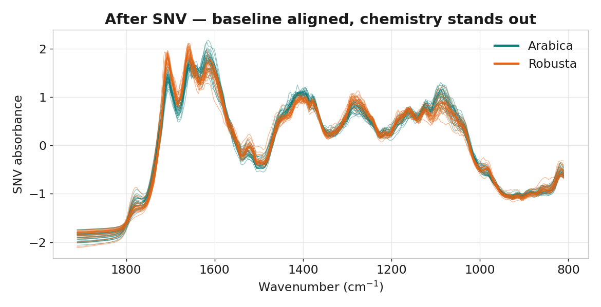
PCA：把 286 個波數壓成幾個方向
主成分分析（Principal Component Analysis）在資料最分散的方向上建立新座標軸： PC1 是變異最大的方向、PC2 與它垂直且次大……少數幾個主成分，就能描述最重要的品種結構。
要保留幾個主成分？
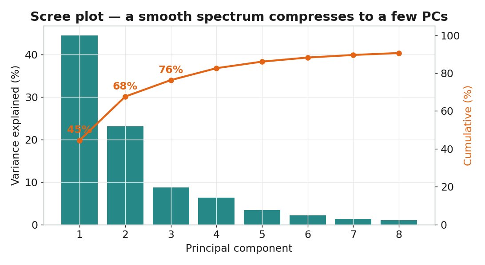
品種自己浮現
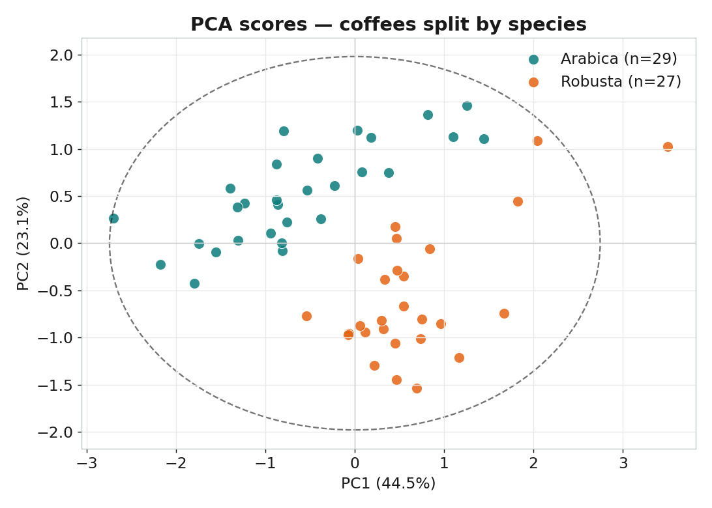
負荷量回連紅外化學
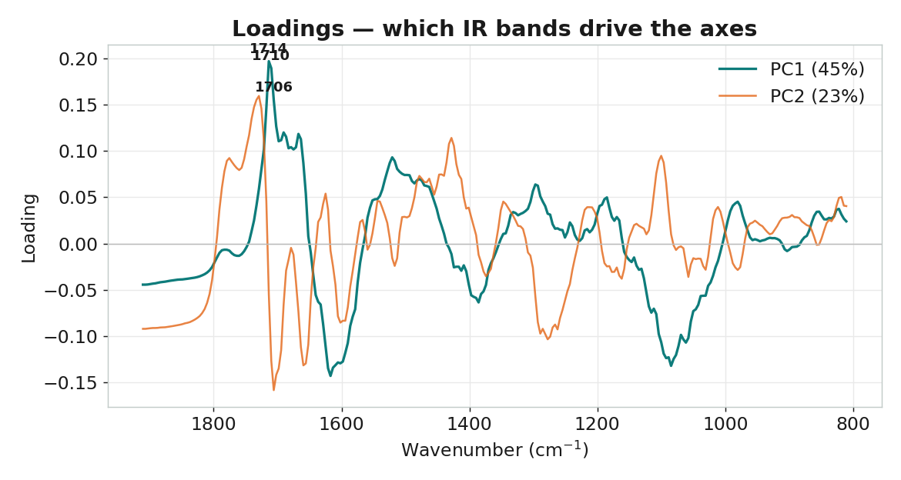
PLS-DA：用指紋「鑑別」Arabica vs Robusta
偏最小二乘判別分析（PLS Discriminant Analysis）給模型看過品種標籤，找出的潛在變量 同時解釋光譜的變異、又對齊 Arabica / Robusta 的分界。這就是它和 PCA 的關鍵差異： PCA 只看 X，PLS-DA 一手抓光譜、一手抓品種標籤。
監督式分數：LV1 直接分開兩品種
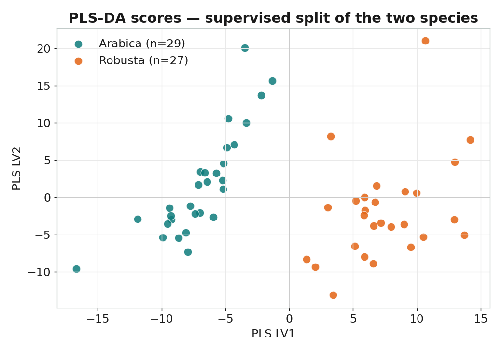
該用幾個潛在變量？用交叉驗證
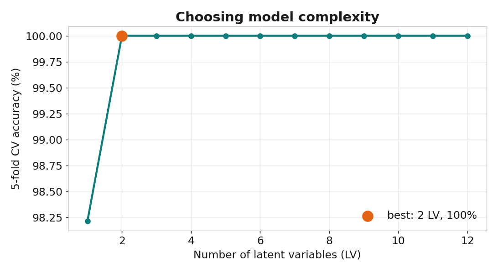
成果：交叉驗證下的混淆矩陣
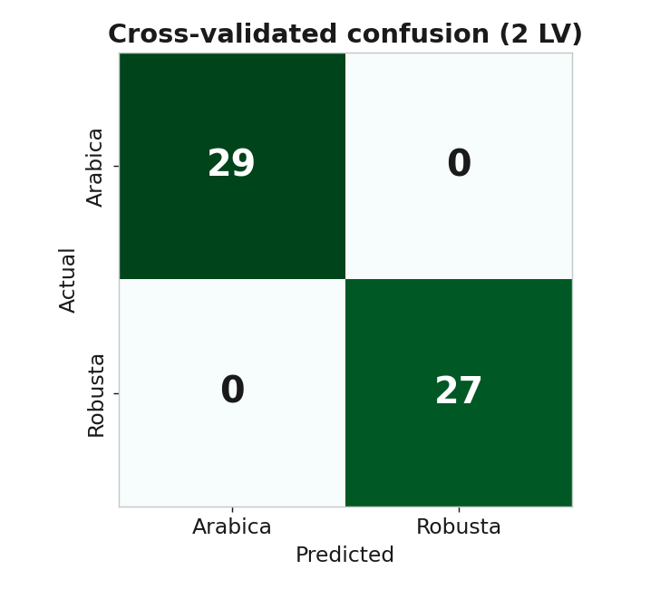
準確率 100%
5 折交叉驗證，56 支咖啡全部分類正確。2 個 LV
但 1 個 LV 已達 98.2%——複雜度夠用就好。哪些波段在做決定？
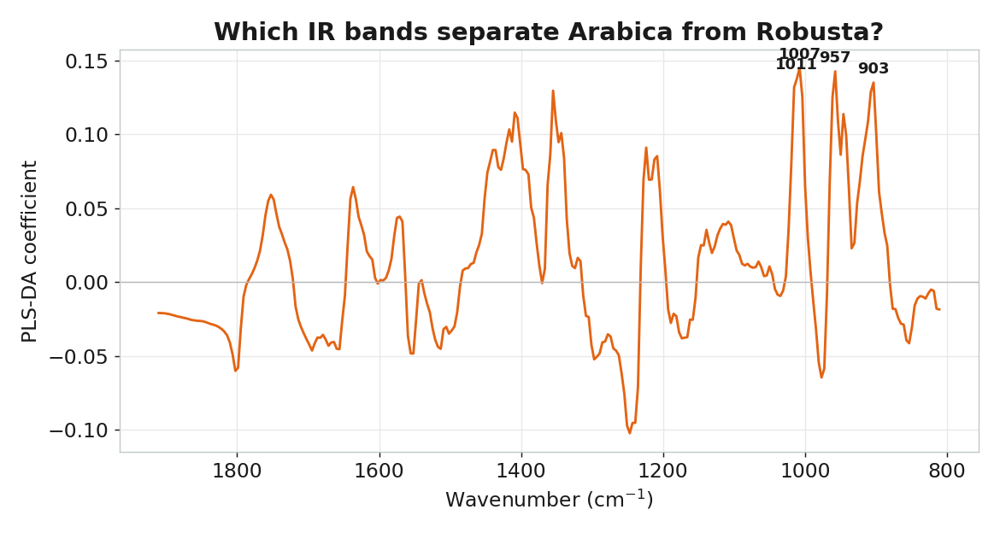
光譜的差異，是真實的咖啡化學
FTIR 把 Arabica 和 Robusta 分開了——但這是真的化學差異，還是光譜的巧合？
我們換一份完全不同的資料來檢驗：R 語言 pgmm 套件的 coffee 資料，43 支咖啡，
直接用濕式化學量了 12 種成分（脂肪、咖啡因、葫蘆巴鹼、綠原酸…）。
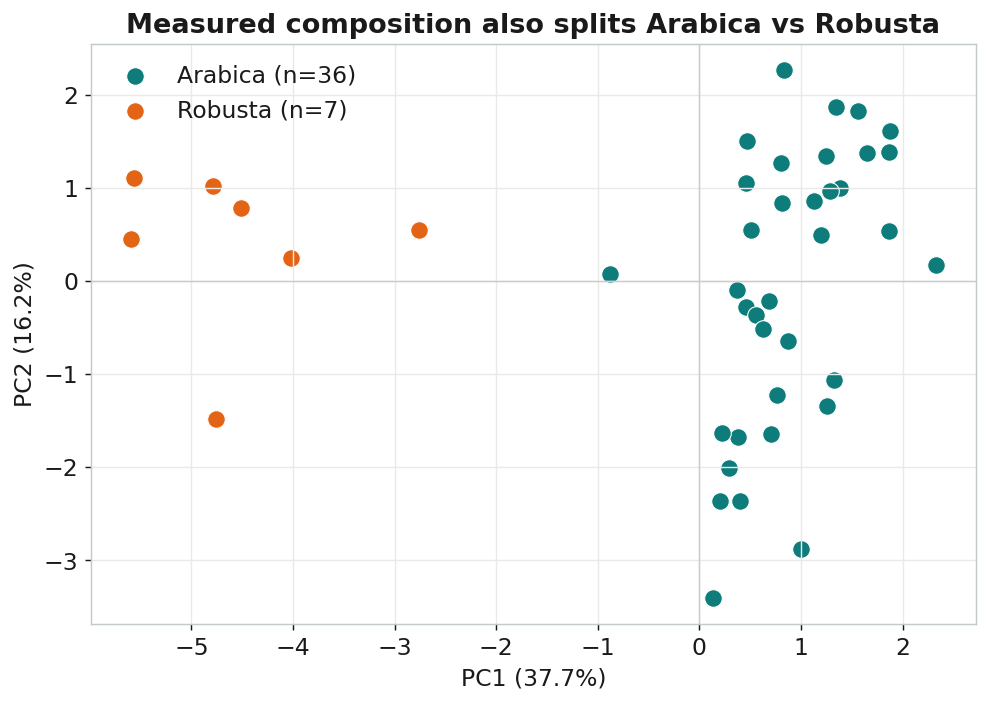
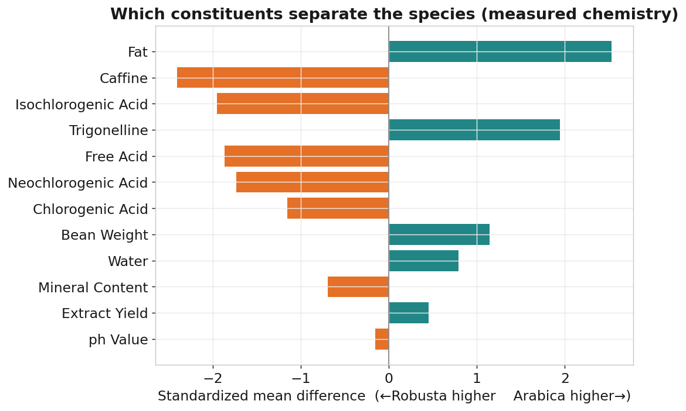
用這份真實成分做 PLS-DA，留一法交叉驗證準確率一樣是 100%——和 FTIR 光譜結果完全一致。 而且這些「會分」的成分，每一個在紅外光譜裡都有對應吸收：
| 真實成分差異（pgmm） | 哪邊較高 | 對應的 FTIR 吸收 |
|---|---|---|
| 脂肪 Fat（15.4% vs 9.1%） | Arabica | 酯基 C=O ~1745、C–H ~2920 / 2855 cm⁻¹ |
| 咖啡因 Caffeine（1.2% vs 1.9%） | Robusta | C=O / C=N ~1700–1600 cm⁻¹ |
| 綠原酸類 Chlorogenic acids | Robusta | 芳香 C=C、C–O ~1600–1000 cm⁻¹ |
| 葫蘆巴鹼 Trigonelline | Arabica | 環 C=N / C–N ~1600–1500 cm⁻¹ |
| 碳水化合物 / 醣類 | — | 1007 / 957 / 903 cm⁻¹（C–O，PLS-DA 鑑別波段） |
Python 程式（scikit-learn）
整套分析用 numpy / pandas / scikit-learn 完成，可重現。完整檔案見 python/ 目錄。
前處理 — SNV 散射校正（python/ftir_utils.py）
def snv(X):
"""Standard Normal Variate — per-spectrum scatter correction (standard for IR/DRIFT)."""
Xv = np.asarray(X, float)
mu = Xv.mean(axis=1, keepdims=True)
sd = Xv.std(axis=1, ddof=1, keepdims=True); sd[sd == 0] = 1.0
return (Xv - mu) / sdPCA — 主成分分析 + 品種分群（python/02_pca.py）
from sklearn.decomposition import PCA
Xs = snv(X) # SNV 散射校正
Xc = Xs - Xs.mean(0) # mean-center for PCA
pca = PCA(n_components=8).fit(Xc)
T = pca.transform(Xc) # 樣本在新軸上的位置（分數）
# PC1=44.5%, PC2=23.1% -> 前兩個累積 67.6%; 品種依 PC2 主要分開
# 負荷量 P = pca.components_; top PC1 bands: 1714, 1710, 1706 cm⁻¹ (C=O 區)PLS-DA — 鑑別 Arabica vs Robusta（python/03_plsda.py）
from sklearn.cross_decomposition import PLSRegression
from sklearn.model_selection import StratifiedKFold, cross_val_predict
from sklearn.pipeline import Pipeline
from sklearn.preprocessing import StandardScaler, FunctionTransformer
y = (meta["variety"].values == "Arabica").astype(int) # 1=Arabica, 0=Robusta
def pipe(k):
return Pipeline([("snv", FunctionTransformer(snv)),
("center", StandardScaler(with_std=False)),
("pls", PLSRegression(n_components=k))])
cv = StratifiedKFold(5, shuffle=True, random_state=42)
# 1 LV: 98.2%, 2 LV: 100% — 停在 2 LV 即可
yhat = cross_val_predict(pipe(2), X.values, y.astype(float), cv=cv).ravel()
acc = ((yhat >= 0.5).astype(int) == y).mean() # 5 折 CV 準確率 = 100%
# 鑑別波段: 1007 / 957 / 903 cm⁻¹ (醣類 C–O 區)▶ 如何在本機重跑
pip install numpy pandas scipy scikit-learn matplotlib
cd python
python 01_explore.py # 下載資料 + 原始 / SNV 光譜圖
python 02_pca.py # 陡坡 / 分數 / 負荷量
python 03_plsda.py # 監督分數 / 選 LV / 混淆矩陣 / 鑑別係數
# 所有圖輸出到 python/figures/用 Orange Data Mining 親手拉一遍
課堂可用 Orange 的拖拉式 widget，不寫一行程式就重現上面的 PCA 與品種鑑別。
開啟 orange/coffee_ftir_workflow.ows，把 File 指向 data/coffee_orange.tab 即可。
┌─ Data Table （檢視原始 FTIR 光譜矩陣）
│
File ────┼─ PCA ──Transformed Data──▶ Scatter Plot ← PCA 分支（Color = variety）
(coffee_ │
orange) └─ Logistic Regression ──▶ Test & Score ──▶ Confusion Matrix
（Arabica vs Robusta，PLS-DA 的 Orange 對應，無需 Select Rows）關於 PLS-DA：Orange 內建的 PLS widget 只做數值回歸，故分類分支改用 Logistic Regression——同樣是監督式線性鑑別，能直接輸出混淆矩陣，教學概念與 PLS-DA 完全相通。本資料已只有 Arabica / Robusta 兩類，無需 Select Rows，比質譜課更簡潔。
| 對應概念 | Python 圖 | Orange widget |
|---|---|---|
| FTIR 光譜（原始） | ft01 | File → Data Table |
| 主成分數量 | ft03 | PCA 視窗內變異曲線 |
| 分數圖（依品種上色） | ft04 | PCA → Scatter Plot（Color=variety） |
| 分類 + 混淆矩陣 | ft08 | Logistic Regression → Test&Score → Confusion Matrix |
| 哪些波段在分類 | ft09 | Rank widget（information gain / ANOVA） |
PCA 與 PLS-DA，一張表看懂
| 面向 | PCA | PLS-DA |
|---|---|---|
| 學習方式 | 非監督（只看光譜 X） | 監督（用光譜 X 與品種 y） |
| 目的 | 探索結構、分群、找異常 | 分類鑑別（Arabica vs Robusta） |
| 找方向的準則 | 最大化 X 的變異 | 最大化 X 與品種的共變異 |
| 本課結果 | PC1=44.5%，兩品種自動分群（PC2 主要） | 2 LV，5 折 CV 準確率 100% |
| 關鍵圖 | 陡坡圖、分數圖、負荷量 | CV 曲線、混淆矩陣、回歸係數 |
| 關鍵波段 | 1714 / 1710 / 1706 cm⁻¹（羰基 C=O） | 1007 / 957 / 903 cm⁻¹（醣類 C–O） |
| 何時用 | 先用它「看」光譜資料 | 確定要鑑別時用它建模 |